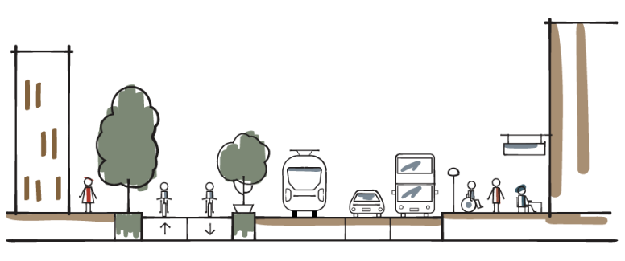
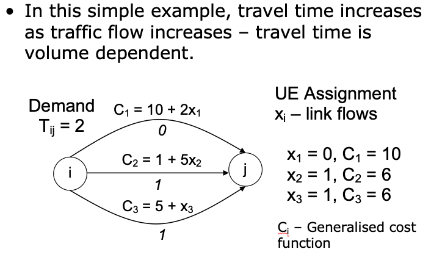

Civil 361: Traffic Engineering 2
Introduction to Transportation Planning
Dr Minh Kieu
Lecturer
Department of Civil and Environment Engineering, University of Auckland
These slides:
http://bit.ly/361-planning

Minh Kieu
These HTML slides can be accessed by:
http://bit.ly/civil361-planning
PDF version can be found on Canvas
From 2020: Lecturer in Transport Analytics at the Department of Civil and Environment Engineering
Office hours: 1 hour after lectures, or contact me via emails
B401, Room 11.16
minh.kieu@auckland.ac.nz

Learning outcomes:
1. Understand what is transportation planning
2. Understand the New Zealand’s five transport planning objectives
3. Understand the travel demand forecasting models
Auckland is transforming rapidly
Auckland’s city centre is going through a period of rapid transformational change, with substantial investment committed to the area by both the public sector and private developers.
City Rail Link starts operating in 2024: 54,000 peak-time passengers each hour
“By 2032 Auckland's city centre will be highly regarded internationally as a centre for business and learning, innovation, entertainment, culture and urban living - all with a distinctly 'Auckland' flavour.” - Auckland City Centre Masterplan
We have consistently underestimated how we might grow
Our public transport system is underdeveloped
Despite the green paint, cycling is not prioritised
Transport Planning (3L/T)
Learning outcomes:
1. Understand what is transportation planning
2. Understand the New Zealand’s five transport planning objectives
3. Understand the travel demand forecasting models
What is Transportation Planning ?
Transport planning is defined as the steps required in the operation, provision and management of facilities and services for the modes of transport
to achieve safer, faster, comfortable, convenient, economical and environment-friendly movement of people and goods.
It is a prediction of usage demand in the future and steps to ensure all the necessary facilities and services to cater to that demand.
Transportation planning provides the information, tools, and public involvement needed for improving transportation system performance.
Transportation planning is a continuous process that requires monitoring of the system’s performance and condition.
Learning outcomes:
1. Understand what is transportation planning
2. Understand the New Zealand’s five transport planning objectives
3. Understand the travel demand forecasting models
New Zealand’s five transport planning objectives
Assist economic development;
Assist safety and personal security
Improve access and mobility;
Protect and promote public health;
Ensure environmental sustainability.
Read more:
Here
Assist economic development
Read more:
Minstry of Transport (2016) Contributions of transport to economic development.
Assist economic development
Example: East-West connection project in Auckland
https://www.nzta.govt.nz/assets/projects/east-west-connections/ewc-interactive-map.pdf
New Zealand’s five transport planning objectives
Assist economic development;
Assist safety and personal security
Improve access and mobility;
Protect and promote public health;
Ensure environmental sustainability.
Read more:
Here
Assist safety and personal security
1. reduce accidents
2. reduce crash severity
Road transport was estimated to have caused 650 deaths in New Zealand in 2012 (308 from traffic accidents, 283 from air pollution and 59 from noise pollution)
Assist safety and personal security
Read more:
Ministry of Transport. Road to Zero: A New Road Safety Strategy for NZ
New Zealand’s five transport planning objectives
Assist economic development;
Assist safety and personal security
Protect and promote public health;
Ensure environmental sustainability.
Read more:
Here
Improve access and mobility
1. Measurement of ease of access to activities, facilities and delivery of goods ;
2. Availability of other travel alternatives and emergency travel options
Accessibility of public transport in Auckland
New Zealand’s five transport planning objectives
Assist economic development;
Assist safety and personal security
Improve access and mobility;
Protect and promote public health;
Ensure environmental sustainability.
Read more:
Here
Protect and promote public health:
Transport can impact on health in a number of ways
In 2011–2014, New Zealanders spent the vast majority (79%) of their total travel time in motor vehicles, with much less travel time spent walking (13%), cycling (2%) or on public transport (4%)
Active forms of transport (such as walking and cycling) have a range of health benefits.
Protect and promote public health: Ideal street design
More at the next chapters
New Zealand’s five transport planning objectives
Assist economic development;
Assist safety and personal security
Improve access and mobility;
Protect and promote public health;
Ensure environmental sustainability.
Read more:
Here
Ensure environmental sustainability
Read more:
Auckland Transport (2019) Auckland's road transport emissions...a new dialogue
Group discussion
1. Discuss an area in Auckland with traffic issues
Congestion
Safety
Noise
Pollution
2. How do you present the issue to policymakers?
Transport as a complex organic system
We need a holistic approach in transport planning to recognize and take advantage of all the interactions
Economy
Safety
Accessibility and Mobility
Public health
Environment
Just focusing on one aspect, for instance Economy, will not do it!
Learning outcomes:
1. Understand what is transportation planning
2. Evaluate the need of transportation planning and managing
Travel demand forecasting
Travel demand: number of persons/vehicles expected to travel between a particular pair of origin and destination via a particular route and use a particular mode of travel over a given time period
Required for:
Planning new facilities (e.g. roads, residential areas)
Expansion of existing facilities
Long-term demand forecasting with exisiting facilities
Where to best invest our limited funding?
Origin-Destination (OD) table
| Proportion of trips | Zone 1 | Zone 2 |
|---|---|---|
| Zone 1 | 0.2 | 0.8 |
| Zone 2 | 0.8 | 0.2 |
Where trips come from
Where trips go to
By what mode
.. And perhaps also:
For what purpose
Characteristics of trip makers (e.g. Socio-economic, income)
Activities at origin and destination of the trip
Stratification of Trip Purposes
To establish trip patterns by purpose.
Home-Based-Work (HBW)
Home-Based-Other (HBO)
Non-Home-Based (NHB)
Internal-External : Trips with either their origin or destination outside the study area.
Through Trips: Trips that pass through the study area. Neither origin nor destination is in the study area.
Conventional Four-step Transportation Planning Modelling
Dated back to 1950s and 1960s
Four decision models are the basis of the traditional travel demand model:
Trip generation
Trip distribution
Modal split
Traffic assignment.
Step 1: Trip generation
Trip generation determines the number of trips attracted to a certain area or generated in a certain area.
Trip attraction: Trips towards the zone
Trip production: Trips from the zone
What variables influence the number of productions and attractions to/from a zone?
Step 1: Trip generation
The amount of trips generated are related to several factors:
Characteristics of trip-makers: age, income, car ownership, etc
Characteristic of developments: number of units, square footage of floor area, parking spaces, etc
Trip generation models often accept land use characteristics as inputs
Step 1: Trip generation: Simple Trip-rate model
Example: Determine the number of trips per day attracted to a zone of 200 retail and 500 nonretail workers
| Trip type | Attractions per nonretail employee | Attractions per retail employee |
|---|---|---|
| HBW | 2 | 2 |
| HBO | 3 | 5 |
| NHB | 2 | 4 |
Example: Determine the number of trips per day attracted to a zone of 200 retail and 500 nonretail workers
| Trip type | Attractions per nonretail employee | Attractions per retail employee | Number of trips |
|---|---|---|---|
| HBW | 2 | 2 | (200x2)+(500x2)=1400 |
| HBO | 3 | 5 | (200x3)+(500x5)=3100 |
| NHB | 2 | 4 | (200x2)+(500x4)=2400 |
Step 1: Trip generation
In practice, there are basically two different model structures for trip generation models
The category analysis models (or cross-classification models)
Regression models
Step 1: Trip generation: The category analysis model
Extension of the simple trip-rate models
Based on the assumption that the number of trips generated by similar households or households belonging to the same category is the same
\[\begin{aligned} T_i = \sum_{\forall k} \ n_k^i g_k \\ \end{aligned} \]$n_k^i$ number of households in category $k$
$g_k$ average rate of trip generation per household
Reference: M. Rogers and B. Enright, (2016). Highway Engineering, John Wiley & Sons Inc. Chapter 1 and 2
Step 1: Trip generation: The category analysis model
From this table we have the number of households $n_k^i$. We now need to find out on average how many trips are made by each household in each category (i.e. trip rates)
\[\begin{aligned} T_i = \sum_{\forall k} \ n_k^i g_k \\ \end{aligned} \]In practice, these values can often be found from census or household travel survey data
Solution:
\[\begin{aligned} T_i = \sum_{\forall k} \ n_k^i g_k \\ \end{aligned} \]
Step 1: Trip generation: The regression model
In this model an additive functional form is assumed to exist between the factors which affect trip-generation and the number of trips generated. Generally, a linear function of the following form is used:
\[\begin{aligned} T_i = \alpha_1 z_{1,i} + \alpha_2 z_{2,i} + ... + \alpha_n z_{n,i}\\ \end{aligned} \]$\alpha_k$ parameter of the regression function
$z_{k,i}$ value of the $k$ variable (e.g. income, age, car ownership)
Step 1: Trip generation: The regression model -- Example
Trip production:
\[\begin{aligned} P_i = 12.5 + 2.105 C_i + 0.88 W_i\\ \end{aligned} \]$C_i$ = number of trips originated from zone $i$
$W_i$ = number of workers in zone $i$
Trip attraction:
\[\begin{aligned} A_j = 218 + 17.24 X_1 + 3.255 X_2\\ \end{aligned} \]$X_1$ = 1000 sq. m of retail floor areas in zone $j$
$X_2$ = 1000 sq. m. of service and office floor areas in zone $j$
Step 1: Trip generation: Balancing Trip Productions and Attractions
Make sure that the productions and attractions within the study are equal
Productions are generally considered to be more accurate
Attractions are balanced proportionately to match productions within each zone
| Zone | $P_0$ | $A_0$ | $\bar{P}$ | $\bar{A}$ |
|---|---|---|---|---|
| 1 | 100 | 300 | 100 | 150 |
| 2 | 200 | 300 | 200 | 150 |
| Total | 300 | 600 | 300 | 300 |
Step 2: Trip Distribution Models:
$T_{ij}$ Number of trips produced (Origins) at zone $i$ and the number of trips attracted (Destination) to zone $j$
| Zone | 1 | 2 | 3 | 4 |
|---|---|---|---|---|
| 1 | 200 | 300 | 300 | 200 |
| 2 | 100 | 300 | 200 | 400 |
| 3 | 400 | 200 | 200 | 200 |
| 4 | 300 | 200 | 300 | 200 |
Step 2: Trip Distribution Models
From Step 1 (Trip generation), we know the levels of Trip attraction and Trip production, now how do we know the number of trips between zones?
All trip-attracting zones of the pair $j$ in the region will compete with each other to attract trips produced by each zone $i$.
More trips will be attracted by zones that have a higher level of “attractiveness”
Other factors that might affect the choice of j include impedance, e.g. distance
Step 2: Trip Distribution Models: OD matrix
Step 2: Trip Distribution Models: the Gravity Model
The most widely used trip distribution model is the Gravity Model
uses attributes of the transport system and land use data to distribute trips throughout the network
anologous to Newton's Law of Gravity
The number of trips between zones is
directly proportional to the number of trip attractions generated by the destination zone
inversely proportional to travel time (or cost) between the two zones
Step 2: Trip Distribution Models: the Gravity Model
\[\begin{aligned} T_{ij} = P_i \Bigg[ \frac{\frac{A_j}{t_{ij}^n}}{\sum_j{\frac{A_j}{t_{ij}^n}}} \Bigg] \\ \end{aligned} \] \[\begin{aligned} T_{ij} = A_j \Bigg[ \frac{\frac{P_i}{t_{ij}^n}}{\sum_j{\frac{P_i}{t_{ij}^n}}} \Bigg] \\ \end{aligned} \]
Where:
$T_ij$ = number of trips produced in zone $i$ and attracted to zone $j$
$P_i$ = total number of trips produced in zone $i$
$A_j$ = number of trips attracted to zone $j$
$t_{ij}$ = travel time (or cost) between zones $i$ and $j$
$n$ = empirically derived travel time exponent (calibration factor)
Step 2: Trip Distribution Models: travel time exponent $n$
| Trip purpose | Work | Social | Shopping | Bussiness | Recreation | Other |
|---|---|---|---|---|---|---|
| Values of $n$ | 0.5 | 3 | 2-3 | 2 | 2 | 2 |
Step 2: Trip Distribution Models: Example of Gravity Model
Origin zone (Zone 1):
1000 families
1000 automobiles
100 shopping trips per day
Destination zones (Zone 2-4) :
| Zone | 2 | 3 | 4 |
|---|---|---|---|
| Travel time | 5 | 20 | 10 |
| Activity(shopping area, $m^2$) | 10,000 | 40,000 | 20,000 |
Step 2: Trip Distribution Models: Example of Gravity Model
Trip Distribution Models: OD matrix estimation
Sometimes we can observe the number of trips or the demand between some particular pairs of origin and destination (e.g. from traffic survey or from big data)
| Zone | 1 | 2 | 3 | 4 |
|---|---|---|---|---|
| 1 | ?? | 300 | 300 | ?? |
| 2 | 100 | ?? | 200 | 400 |
| 3 | 400 | 200 | ?? | ?? |
| 4 | ?? | 200 | ?? | 200 |
This is now an optimisation problem to fill in the table!
Step 3: Modal split
Estimate the probability of choosing each mode of transport. This is done through implementation of cost functions, reflecting the utility of specific modes which is dependent on various attributes of that specific mode.
Traveler features (mainly sociodemographic characteristics), such as income, car ownership.
Features of the journey such as the purpose of the trip or the time of the day.
Features of the transportation facility such as availability, reliability, costs, safety and security.
Step 3: Modal split: Mode Choice Models
Follows the micro-economic concept of utility maximisation. Discrete choice models are created based on the assumption that individuals select a specific mode of transport from a finite choice set, each with an utility $U_a$
\[\begin{aligned} U_m = \alpha_0 + \sum \alpha_j z_{mj} \\ \end{aligned} \]Where:
$U_m$ = total utility provided by mode $m$
$z_{mj}$ = set of travel characteristics of mode $m$, such as travel time or costs
$\alpha_j$ = parameters of the model, to be determined by calibration
$\alpha_0$= constant to account for non-observable features of the mode $m$
Step 3: Modal split: Mode Choice Models
Multinomial Logit (MNL) is the most popular mode choice model
\[\begin{aligned} P_{m} = \frac{e^{U_m}}{\sum_{j=1}^J e^{U_j}} \\ \end{aligned} \]$P_m$ is the probability of mode $m$ to be chosen from a finite mode choice set of 1 to $J$.
$U_m$ total utility provided by mode $m$
Multinomial Logit (MNL) is the most popular mode choice model
\[\begin{aligned} P_A = \frac{1}{1 + e^{(U_B-U_A)}} \\ \end{aligned} \]Modal split exercise: Use a logit model to determine the probabilities of a group of 5000 work commuters choosing between three modes of travel during the morning peak hour (car, bus, light rail)
The utility functions are estimated as follows
$U_C = 2.4 - 0.2C - 0.03T$
$U_B = 0 - 0.2C - 0.03T$
$U_{LR} = 0.4 - 0.2C - 0.03T$
Where, $C$ = cost (\$) and $T$ = travel time (min)
For all workers
The cost of driving is $4.00 with a travel time of 20 min
The bus fare is $0.50 with a travel time of 40 min
The rail fare is $0.80 with a travel time of 25 min
Modal split exercise 2: Effect of introducing bus lane on modal split figures
Taking a suburban route with the same peak hour travel conditions for car and bus described in the previous exercise, the local transport authority constructs a bus lane in order to alter the modal split in favour of bus usage. When in operation, the bus lane will reduce the bus journey time to 20 min and increase the car travel time to 30 min. The cost of travel of both modes remains the same
Calculate the modal distributions for the 1000 work commuters using the route before and after the construction of the proposed new bus facility.
Modal split: Public transport ridership in Auckland
Strong grow: Over 100 million of trips (data from Auckland Transport in 2019)
Smart Card: 95.2% of Auckland public transport trips are made by customers using an AT HOP card

Group discussion
1. Discuss the possible causes of traffic issues in Auckland or your home city
Congestion
Safety
Noise
Pollution
2. Which is the main cause for the issue?
Step 4: Traffic Assignment
Determine which routes will be used and how much traffic can be expected on each route. Needs the following data:
Demand between zones
Available routes (route choice set)
Decision criteria by which users will select route

Step 4: Traffic Assignment:
The traffic assignment model assigns precise quantities of traffic flow to specific routes within each of the zones based on these assumptions:
- Trip makers choose a route connecting their origin and destination on the basis of which one gives the lowest travel costs (e.g. travel time, parking or fare)
- Trip makers know the travel costs on all available routes between the origin and destination
Step 4: Traffic Assignment: “All-or-Nothing” (AON) Assignment
Travel time is assumed to be independent of traffic flow
All road users take the travel alternative with the lowest travel cost.
Step 4: Traffic Assignment: “All-or-Nothing” (AON) Assignment
Step 4: Traffic Assignment: A more practical approach
Route choice decisions are a function of travel cost (e.g. travel time, toll)
- Travel cost are determined by traffic flow
- Traffic flow is a product of route choice decisions
Step 4: Traffic Assignment: Wardrop's principles
1st Principle: User choose the route that minimises their own travel cost -> User equilibrium
2nd Principle: Users distribute themselves on the network in such a way that the average travel cost for all users is minimised -> System Optimum
Step 4: Traffic Assignment: User Equilibrium
Travellers select a route on the basis of travel cost
Traveller know the travel cost of all available routes
Travel costs on all "used" routes will be equal
Traveller cannot improve their travel times by unilaterally changing routes
Step 4: Traffic Assignment: User Equilibrium Example
Assuming user equilibrium conditions, determine the following
Travel time on each route
Traffic volumes on each route
Total system travel time
Given a total hourly flow rate of 4000 veh/hr between a studied OD pair between Zone 1 and Zone 2
\[\begin{aligned} t_1 = 6 + 5 x_1 \\ t_2 = 4 + x_2^2 \\ \end{aligned} \]Where:
$t_1, t_2$ = average travel times on route 1 and 2 in minutes
$x_1, x_2$ = traffic flow on routes 1 nd 2 in 1000s of vehicles/hour
Step 4: Traffic Assignment: User Equilibrium Example
The flow conservation condition: $q= x_1 + x_2 = 4$ , where $q$= total traffic flow between the OD pair in 1000s of vehicles per hour
First check to see if both routes are used
If all traffic is assigned to Route 1:
$t_1(4) = 26 $ min
$t_2(0) = 4 $ min
If all traffic is assigned to Route 2:
$t_1(0) = 6 $ min
$t_2(4) = 20 $ min
-> Both routes should be used!
Step 4: Traffic Assignment: User Equilibrium Example
Wardrop's User Equilibrium gives:
$t_1 = t_2$
$6 + 5x_1 = 4 + x_2^2$
From flow conservation, $x_1 = 4-x_2$, so substituting:
$6 + 5(4-x_2) = 4 + x_2^2$
$x_2^2 + 5x_2 -22 = 0$
Solve the quadratic equation, we have:/p>
$x_2 = 2.815$
$x_1 = 4 - x_2 = 1.185$
Step 4: Traffic Assignment: System Optimun
Second Wardrop's principles
Theoretically, there exists a route choice strategy that minimise the total vehicle hours travel for some traffic flow
\[\begin{aligned} min S(x) = \sum_n x_n c_n (x_n) \\ \end{aligned} \]
Why is it difficult to model traffic systems for planning purposes?
Traditional approaches often work at large scales, struggle to predict local effects
Computationally convenient
Cities are built from the bottom up
What if I want to play with a transport planning model? the ABStreet Game
Windows: https://github.com/a-b-street/abstreet/releases/download/v0.2.39/abstreet_windows_v0_2_39.zip If the game immediately crashes, it might be a graphics card problem.
Mac: https://github.com/a-b-street/abstreet/releases/download/v0.2.39/abstreet_mac_v0_2_39.zip
Unzip the folder, then run play_abstreet.sh or play_abstreet.bat. On Windows, you'll probably get a warning about running software from an unknown publisher.
On your web browser: http://abstreet.s3-website.us-east-2.amazonaws.com/0.2.39/abstreet.html
Recap:
1. Understand what is transportation planning
2. Understand the New Zealand’s five transport planning objectives
3. Understand the travel demand forecasting models
What is Transportation Planning ?
Transport planning is defined as the steps required in the operation, provision and management of facilities and services for the modes of transport
to achieve safer, faster, comfortable, convenient, economical and environment-friendly movement of people and goods.
It is a prediction of usage demand in the future and steps to ensure all the necessary facilities and services to cater to that demand.
Transportation planning provides the information, tools, and public involvement needed for improving transportation system performance.
Transportation planning is a continuous process that requires monitoring of the system’s performance and condition.
Conventional Four-step Transportation Planning Modelling
Trip generation
Trip distribution
Modal split
Traffic assignment.